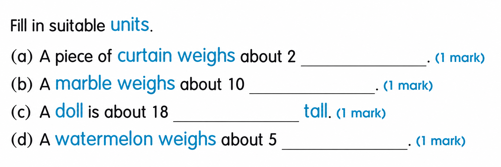
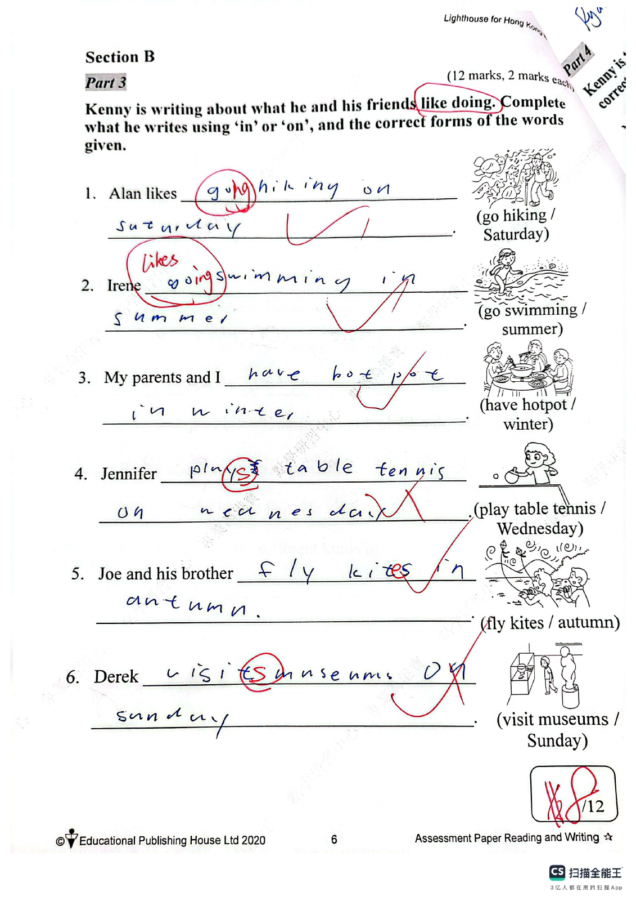
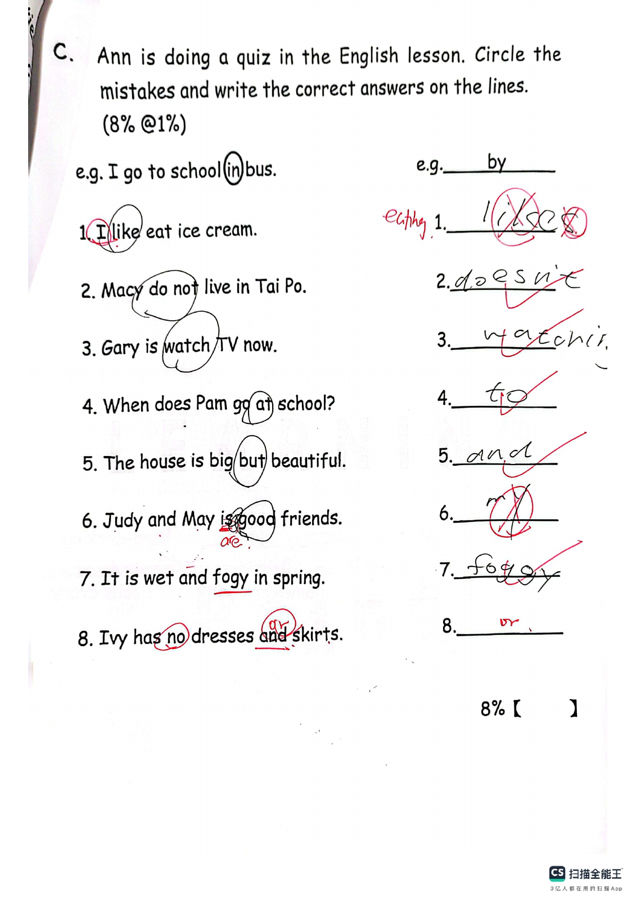
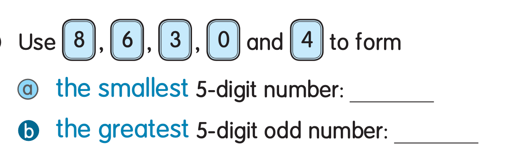

Answer: (a) kg; (b) g; (c) cm; (d) kg
已掌握
| # | 单词/词组 | 中文意思 | 例句/说明 | 已掌握 |
|---|---|---|---|---|
| noun 名词 | ||||
| 1 | birthday | 生日 | My birthday is in May. | |
| 2 | sign | 标志 | Read the sign carefully. | |
| 3 | chapter | 章节 | This chapter is about animals. | |
| 4 | page | 页码 | Please open your book to this page. | |
| 5 | church | 教堂 | The old church is quiet. | |
| 6 | zebra | 斑马 | The zebra has black and white stripes. | |
| 7 | activity | 活动 | This activity is fun. | |
| 8 | art | 艺术 | We learn to draw in art class. | |
| 9 | air | 空气 | We need air to breathe. | |
| 10 | breakfast | 早餐 | I eat breakfast at seven. | |
| 11 | information | 信息 | This book gives us useful information. | |
| 12 | sound | 声音 | I heard a strange sound outside. | |
| phrase 短语 | ||||
| 13 | do sums | 数学计算 | We do sums in math class. | |
| 14 | stay at home | 留在家里 | We stay at home on rainy days. | |
| adjective 形容词 | ||||
| 15 | hard | 硬的；困难的 | This question is hard. | |
| conjunction/preposition 连词/介词 | ||||
| 16 | as | 像；正如 | Do as your teacher says. | |
| adjective/adverb 形容词/副词 | ||||
| 17 | early | 早的；早地 | I get up early. | |
| question word 疑问词 | ||||
| 18 | which | 哪一个 | Which one do you like? | |
| verb 动词 | ||||
| 19 | learn | 学习 | We learn new words every day. | |
| noun 名词 | ||||
| 20 | floor | 楼层 | Our classroom is on the second floor. | |
| # | 单词/词组 | 中文意思 | 例句/说明 | 已掌握 |
|---|---|---|---|---|
| adjective 形容词 | ||||
| 1 | correct | 正确的 | This answer is correct. | |
| 2 | wrong | 错误的 | The answer is wrong. | |
| 3 | hard-working | 勤奋的，努力工作的 | They are hard-working. | |
| noun 名词 | ||||
| 4 | pronoun | 代词 | "He" is a pronoun. | |
| 5 | grammar | 语法 | We are learning English grammar. | |
| 6 | boxing | 拳击 | Boxing is a sport. | |
| 7 | mushroom | 蘑菇 | A mushroom is a kind of food. | |
| 8 | shelf | 架子；货架 | Put the book on the shelf. The shop has a shelf for snacks. | |
| 9 | signature | 签名（名词） | Please write your signature at the bottom of the form. | |
| 10 | clue | 线索 | This clue helps me. | |
| 11 | relay race | 接力赛 | Let's join the 4x100m relay race together. | |
| 12 | air conditioner | 空调 | We turn on the air conditioner when the room is very hot. | |
| 13 | chemical | 化学物质 | The science teacher keeps the chemicals in a locked cupboard. | |
| 14 | peach | 桃子 | I ate a juicy peach after lunch. | |
| 15 | mango | 芒果 | This mango is sweet and juicy. | |
| noun phrase 名词短语 | ||||
| 16 | theme park | 主题公园 | She went to a theme park. | |
| verb 动词 | ||||
| 17 | arrive | 到达 | I arrive at school on time. | |
| 18 | weigh | 称重；重（多少） | We weigh the bag. The bag weighs two kilograms. | |
| 19 | chase | 追逐 | The dog may chase the ball. | |
| 20 | roll | 转动 | The ball can roll. | |
| preposition 介词 | ||||
| 21 | opposite | 在......对面 | The library is opposite the school. | |
| verb phrase 动词短语 | ||||
| 22 | pick fruit | 摘水果 | We pick fruit in the fruit fields. | |
| 23 | look at the moon | 赏月 | We look at the moon at night. | |
| 24 | feed the animals | 喂动物 | I want to go to a farm because I want to feed the animals. | |
| 25 | make the bed | 整理床铺 | I can make the bed. | |
| 26 | get a pet | 饲养宠物 | Think carefully before you get a pet. | |
| adjective 形容词 | ||||
| 27 | royal | 皇家的 | The king lives in a royal palace. | |
| question phrase 疑问短语 | ||||
| 28 | how much | 多少（用于不可数名词） | How much milk is there in the fridge? | |
| conjunction 连词 | ||||
| 29 | and | 和；并且（表并列） | Christine and Susan are sisters, and they are very different. | |
| adverbial phrase 副词短语 | ||||
| 30 | per day | 每天 | Our dog goes for two walks per day. | |
| # | 单词/词组 | 中文意思 | 例句/说明 | 已掌握 |
|---|---|---|---|---|
| time/date 时间日期 | ||||
| 1 | January | 一月 | January is the first month. | |
| 2 | February | 二月 | February is the second month. | |
| 3 | April | 四月 | April is the fourth month. | |
| 4 | September | 九月 | September is the ninth month. | |
| 5 | December | 十二月 | December is the twelfth month. | |
| 6 | Monday | 星期一 | Monday is a weekday. | |
| 7 | Thursday | 星期四 | Thursday is a weekday. | |
| numbers 数字 | ||||
| 8 | four | 4 | Four is 4. | |
| 9 | sixteen | 16 | Sixteen is 16. | |
| 10 | eighteen | 18 | Eighteen is 18. | |
| 11 | nineteen | 19 | Nineteen is 19. | |
| 12 | forty | 40 | Forty is 40. | |
| solid shape 立体图形 | ||||
| 13 | hexagonal pyramid | 六棱锥 | A hexagonal pyramid has one hexagonal base and six triangular side faces. | |
| plane shape 平面图形 | ||||
| 14 | parallelogram | 平行四边形 | A parallelogram has two pairs of parallel sides. | |
| geometry 几何 | ||||
| 15 | adjacent side | 邻边 | These are adjacent sides. | |
| # | 单词/词组 | 中文意思 | 例句/说明 | 已掌握 |
|---|---|---|---|---|
| numbers 数字 | ||||
| 1 | approximate value | 近似值 | The approximate value of 198 to the nearest ten is 200. | |
| operations 运算 | ||||
| 2 | total | 总共的 | Find the total number of apples. | |
| 3 | altogether | 一起 | How many are there altogether? | |
| 4 | carrying | 进位 | Carrying helps when the ones make ten. | |
| geometry 几何 | ||||
| 5 | identical | 完全相同的 | These two triangles are identical in shape and size. | |
| directions 方向 | ||||
| 6 | direction | 方向 | Direction tells us where to go. | |
| question word 题目词 | ||||
| 7 | onwards | 向前；继续向前 | Count onwards from 20. | |
| comparison 比较 | ||||
| 8 | lightest | 最轻的 | The 1 kg bag is the lightest of the 1 kg, 2 kg and 3 kg bags. | |
| 9 | heavier | 更重的 | A 3 kg bag is heavier than a 2 kg bag. | |
| 10 | heaviest | 最重的 | The 3 kg bag is the heaviest of the 1 kg, 2 kg and 3 kg bags. | |
| time/date 时间日期 | ||||
| 11 | leap year | 闰年 | A leap year has 366 days. | |
| 12 | non-leap year | 平年 | A non-leap year has 365 days. | |
| 13 | midnight | 半夜；午夜（凌晨零点） | Midnight is twelve o'clock at night. | |
| quantity 数量 | ||||
| 14 | pair | 双 | A pair means two things together. | |
| position 位置 | ||||
| 15 | front | 前面 | The door is at the front of the room. | |
| operations calculation 运算 | ||||
| 16 | difference | 差 | The difference is the answer in subtraction. | |
| 17 | A times B | A✖️B | A times B means multiplication. | |
| 18 | multiplication | 乘法 | In multiplication, 3 times 4 equals 12. | |
| 19 | mixed operations | 混合运算 | Mixed operations use more than one operation. | |
| 20 | division | 除法 | Division is the opposite of multiplication. | |
| teacher math vocabulary 老师数学词汇 | ||||
| 21 | stop | 停 | Stop counting when you reach twenty. | |
| measurement 测量 | ||||
| 22 | height | 高度 | Measure the height of the box. | |
| 23 | kilogram | 千克 | One kilogram is 1,000 grams. | |
| data charts 统计图 | ||||
| 24 | block chart | 方块图 | Read the block chart. | |
| 句型结构 | ||||
| 25 | Angle ... is larger than Angle ... | 角......大于角...... | Angle A is larger than Angle B. | |
| 26 | Angle ... is the largest. | 角......是最大的。 | Angle A is the largest. | |
| 27 | ... is to the east of ... | ......位于......的东侧。 | The school is to the east of the park. | |
| 28 | ... is to the south of ... | ......位于......的南侧。 | The library is to the south of the shop. | |
| 29 | ... is to the west of ... | ......位于......的西侧。 | The bank is to the west of the school. | |
| plane shape 平面图形 | ||||
| 30 | trapezium | 梯形（只有一组对边平行的四边形） | A trapezium has exactly one pair of parallel sides. | |




